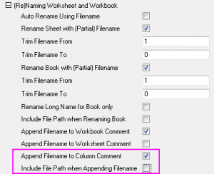
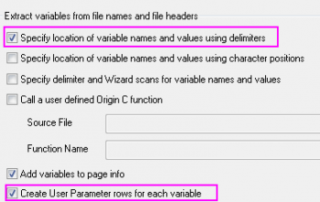
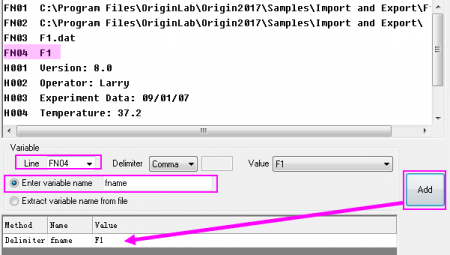

FAQ-870 Wie extrahiere ich den Dateinamen ohne Erweiterung in die Spaltenkommentare?
extract-filename-without-extension
Letztes Update: 06.01.2019
Origin 2017 SR2 und höher
Seit Origin 2017 SR2 können Sie im Zweig Arbeitsblatt und Arbeitsmappe (um)benennen von allen Importhilfsmitteln das Kontrollkästchen Dateiname an Spaltenkommentar anhängen aktivieren und das Kontrollkästchen Den Dateipfad einbinden, wenn der Dateiname angehängt wird deaktivieren, um den Dateinamen ohne Erweiterung in die Spalte Kommentare zu extrahieren.
- 
| Hinweise: Wenn Sie beim Anhängen des Dateinamens an die Spalte Kommentare die Dateierweiterung einschließen möchten, können Sie den Dialog Systemvariablen festlegen verwenden. Wählen Sie Einstellungen: Systemvariablen, um den Dialog zu öffnen. Setzen Sie IFE auf 0. |
Origin 2017 SR1 und älter
Bei älteren Versionen wird bei Aktivierung von "Dateiname an Spaltenkommentar anhängen" die Dateierweiterung standardmäßig eingebunden. Das heißt, Sie müssen Daten über den Importassistenten importieren. Dabei können Sie einen neuen Parameter in der Arbeitsmappe erstellen, der den Dateinamen ohne Dateierweiterung festlegt, und dann den Dateinamen aus der Parameterzeile in die Spalte Kommentare kopieren.
- Wählen Sie Daten: Aus Datei importieren: Importassistent.
- Wählen Sie Ihre Daten unter Datenquelle aus. Wählen Sie den gewünschten Importmodus unter Importmodus aus. Klicken Sie auf Weiter.
- Passen Sie die Einstellungen der Headerzeilen auf der Seite Headerzeilen nach Bedarf an. Klicken Sie auf Weiter.
- Aktivieren Sie unter Extrahieren von Variablen aus Dateinamen und Dateiheader die Kontrollkästchen Bestimmen Sie den Speicherort von Variablennamen und Werten unter Verwendung von Trennzeichen und Anwenderparameterzeilen für jede Variable erstellen. Wählen Sie Weiter.
- 
- Auf der folgenden Seite sollte das weiße Feld oben den Dateinamen mit und ohne Erweiterung auflisten. Wählen Sie unter Variable die hinzuzufügende Zeile. Wählen Sie Variablenname eingeben und legen Sie den Namen fest. Wählen Sie Hinzufügen. Dies legt Ihre neue Variable in dem grauen Feld fest. Wählen Sie Weiter.
- 
- Passen Sie, wie aufgefordert, die Datenspalten benutzerdefiniert an und überspringen Sie, wie aufgefordert, Spalteneinstellungen. Klicken Sie auf Weiter, um zur Seite Filter speichern zu gelangen.
- Unter Filter speichern können Sie diese Einstellung des Importassistenten speichern, so dass Sie diese Schritte nicht jedes Mal beim Importieren einer Datei wiederholen müssen. Aktivieren Sie Filter speichern und geben Sie unter Filterbeschreibung einen Namen für Ihren Filter ein.
- Um die Dateinamen in jeder Spalte innerhalb der neuen Parameter zu nehmen und in die Kommentarzeile einzugeben, aktivieren Sie das Kontrollkästchen Erweiterte Filteroptionen festlegen. Klicken Sie auf Weiter.
- Geben Sie im weißen Feld unter Skript nach allen importierten Dateien das Skript unten ein und klicken Sie dann auf Fertigstellen. Beachten Sie, dass fname die definierte Variable ist, die wir für den neuen erstellten Parameter vergeben haben:
//The goal of this loop is to 1) place all the columns in fname row into the comments row and to 2) hide fname row loop (j,1,wks.ncols) { wcol(j)[C]$ =wcol(j)[fname]$; //places fname into comments } wks.UserParam1=0; //hides fname row in the workbook
Um diese Filtereinstellung erneut zu verwenden, wenn Sie den Importassistenten verwendne, müssen Sie anfangs Passende Filter für Datentyp und Dateinamen anzeigen unter Importfilter auswählen und dann den gewünschten Filter in der Auswahlliste Importfilter für aktuellen Datentyp.
Wenn Sie die Schritte 8 und 9 nicht machen, wird der Dateiname in die neue Parameterzeile importiert. Wenn Sie zeichnen, führt die Legende automatisch die Spalten aus den Kommentaren auf. Um die Legende mit dem Dateinamen zu aktualisieren, müssen Sie entweder
- die Legende als Ihren neuen Parameter vordefinieren
oder
- die neue Parameterzeile manuell kopieren und in die Kommentare einfügen.
Schlüsselwörter:Dateiname extrahieren, Dateierweiterung kürzen